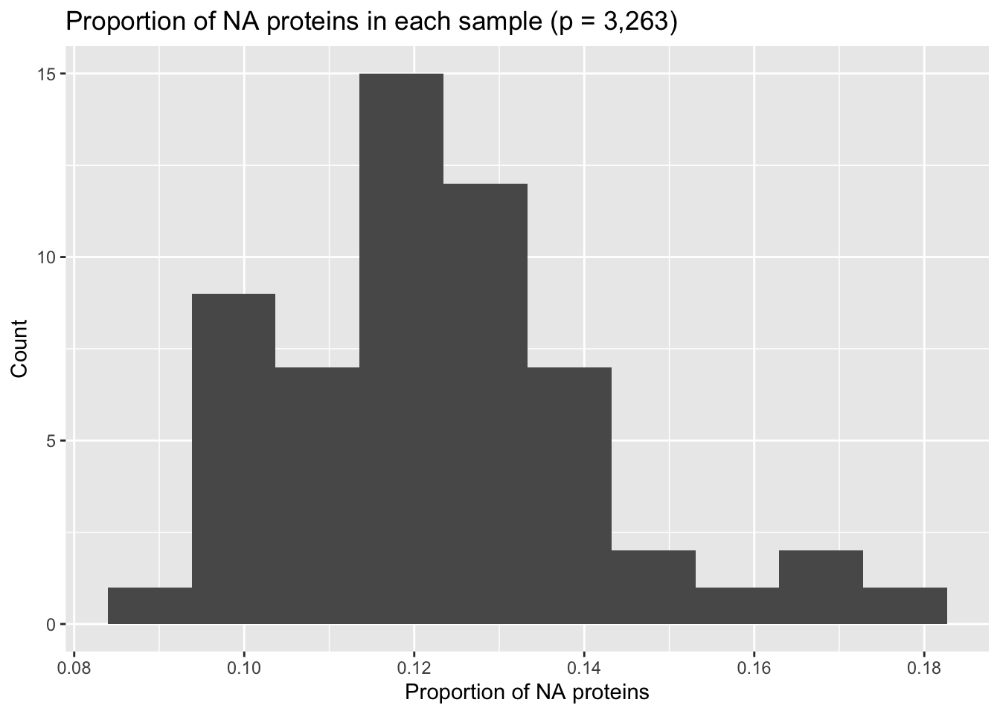
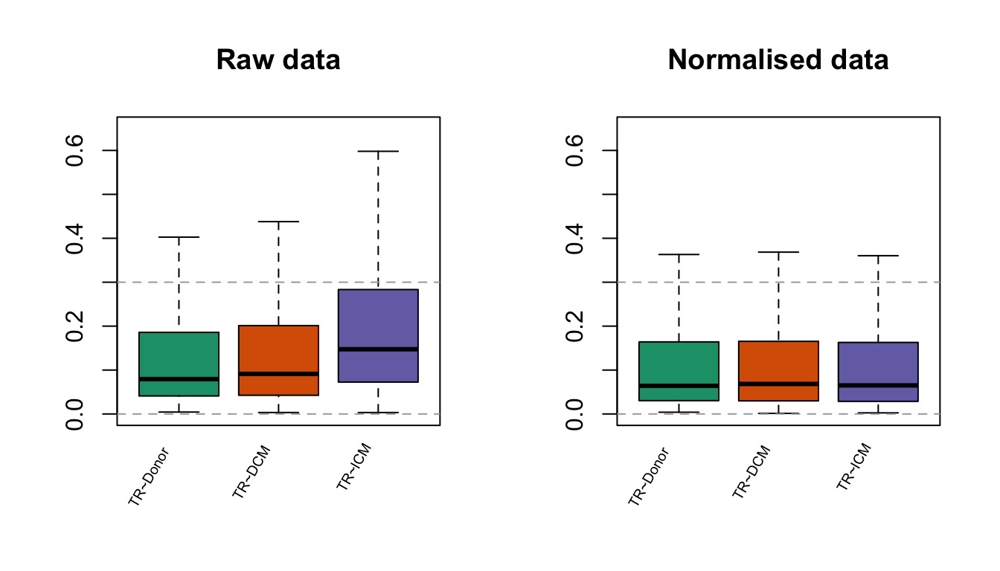

ruvms: Get started
Mengbo Li
School of Mathematics and Statistics, The University of Sydney, AustraliaSource:
vignettes/ruvms.Rmd
ruvms.RmdOverview
Here we present an example of the ruvms workflow that includes data normalisation and a simple downstream differential expression analysis using the Sydney Heart Bank (SHB) proteomics data.
Install ruvms
# install.packages('devtools')
devtools::install_github("Mengbo-Li/ruvms")Load data
The Sydney Heart Bank (SHB) proteomics data are loaded with corresponding sample information.
data("shb_proteomics", package = "ruvms")
dim(raw)
[1] 70 3263
raw[1:5, 1:5]
A0A024QZX5~SERPINB6 A0A024R216~HDGFRP3 A0A024R442~DNPEP A0A024R4E5~HDLBP A0A024R4K9~TMEM120A
1 159132 107574 116363 NA 91374
4 194923 62334 100959 NA NA
8 164094 64548 79290 23625 59086
9 241305 81340 112981 26084 66209
14 219515 61534 96913 19160 63767
dim(smpinfo)
[1] 70 5
head(smpinfo)
ind locBank condition location bank
1 1 LV_5.084 Donor LV 5.084
2 4 LV_6.024 Donor LV 6.024
3 8 LV_4.095 Donor LV 4.095
4 9 LV_5.128 Donor LV 5.128
5 14 LV_7.028 Donor LV 7.028
6 15 LV_7.080 Donor LV 7.080Pre-processing and data normalisation
Here we demonstrate the workflow using the SHB proteomics data.
(0.1) Log2 transformation
raw <- log2(raw)
raw[1:5, 1:5]
A0A024QZX5~SERPINB6 A0A024R216~HDGFRP3 A0A024R442~DNPEP A0A024R4E5~HDLBP A0A024R4K9~TMEM120A
1 17.3 16.7 16.8 NA 16.5
4 17.6 15.9 16.6 NA NA
8 17.3 16.0 16.3 14.5 15.9
9 17.9 16.3 16.8 14.7 16.0
14 17.7 15.9 16.6 14.2 16.0(0.2) Missing data patterns
- Total proportion of missingness:
sum(is.na(raw))/length(raw)
[1] 0.121- Missingness in samples:
ggplot(data.frame(x = colSums(is.na(raw))), aes(x = x)) + geom_histogram(bins = 20) +
labs(x = "Number of NA observations", y = "Count") + ggtitle("Number of NAs in each protein (n = 73)")- Missingness by proteins:
ggplot(data.frame(x = rowSums(is.na(raw))/ncol(raw)), aes(x = x)) +
geom_histogram(bins = 10) + labs(x = "Proportion of NA proteins",
y = "Count") + ggtitle("Proportion of NA proteins in each sample (p = 3,263)")
- Choosing negative control measurements.
Here, we use the low sample variance proteins as the negative controls:
ctl <- colVars(raw) <= quantile(colVars(raw, na.rm = TRUE), probs = 0.25,
na.rm = TRUE)
table(ctl)
ctl
FALSE TRUE
1050 624 - Identify the replication structure
The SHB data set contains 70 samples, where 7 of them have one replicate.
sum(duplicated(smpinfo$locBank))
[1] 7
M <- replicate.matrix(smpinfo$locBank)
rownames(M) <- smpinfo$locBank
dim(M)
[1] 70 63- Perform
ruvmsnormalisation
normed <- ruvms(raw, M, ctl)
normed[1:5, 1:5]
A0A024QZX5~SERPINB6 A0A024R216~HDGFRP3 A0A024R442~DNPEP A0A024R4E5~HDLBP A0A024R4K9~TMEM120A
1 17.4 16.8 16.8 NA 16.5
4 17.6 16.0 16.6 NA NA
8 17.4 16.1 16.3 14.6 15.8
9 17.9 16.4 16.8 14.7 16.0
14 17.6 16.0 16.6 14.4 15.8Diagnostics
- PCA
Normalisation is performed on the data set with missingness, but PCA is produced by subsetting the raw and normalised data to complete subsets.
gg_additions_heart <- list(aes(color = smpinfo$condition, shape = smpinfo$location,
size = 4), labs(color = "Condition", shape = "Location"),
scale_size_identity(guide = "none"), guides(color = guide_legend(override.aes = list(size = 4)),
shape = guide_legend(override.aes = list(size = 4))),
scale_color_manual(values = brewer.pal(3, "Dark2")))
ggPCA <- function(data) {
pcs <- data.frame(prcomp(data)$x)
ggplot(pcs, aes(x = PC1, y = PC2)) + geom_point() + gg_additions_heart +
theme_classic()
}
pca_raw <- ggPCA(raw[, colSums(is.na(raw)) == 0]) + ggtitle("Raw data")
pca_norm <- ggPCA(normed[, colSums(is.na(normed)) == 0]) + ggtitle("Normalised data")
ggarrange(pca_raw, pca_norm, ncol = 2)It is shown that conditions in ruvms normalised data are better separated.
- RLA
par(mfrow = c(1, 2))
RLA(raw, repCol = brewer.pal(3, "Dark2")[smpinfo$condition],
repLabel = unique(smpinfo$condition), title = "Raw data",
ylim = c(-3, 3), guides = seq(-3, 3))
RLA(normed, repCol = brewer.pal(3, "Dark2")[smpinfo$condition],
repLabel = unique(smpinfo$condition), title = "Normalised data",
ylim = c(-3, 3), guides = seq(-3, 3))Ideally, given a properly normalised data matrix, RLA boxplots are expected to be aligned around zero, and the widths of the boxplots should be relatively narrow and concordant with each other. We can see in our example, not only are the RLA boxplots better aligned at zero, but the widths of the of the boxplots are shrinked and more concordant post normalisation.
- TRA
TRA boxplots measure the similarity among replications of the same effective sample. The widths of TRA boxplots are proportional to variations among technical replicates. Provided effective removal of unwanted variations from data, technical replicates are expected to be identical after normalisation.
The ruvms normalisation makes technical replications the same, thereby the widths of the TRA boxplots are zero after normalisation.
par(mfrow = c(1, 2))
smp_w_rep <- which(rowSums(M[, colSums(M) == 2]) == 1)
smp_w_rep <- filter(smpinfo, locBank %in% names(smp_w_rep)) %>%
arrange(locBank)
smp_w_rep
ind locBank condition location bank
1 11 LV_4.001 ICM LV 4.001
2 62 LV_4.001 ICM LV 4.001
3 3 LV_4.039 ICM LV 4.039
4 6 LV_4.039 ICM LV 4.039
5 7 LV_4.070 ICM LV 4.070
6 71 LV_4.070 ICM LV 4.070
7 8 LV_4.095 Donor LV 4.095
8 50 LV_4.095 Donor LV 4.095
9 34 LV_5.045 DCM LV 5.045
10 65 LV_5.045 DCM LV 5.045
11 4 LV_6.024 Donor LV 6.024
12 53 LV_6.024 Donor LV 6.024
13 14 LV_7.028 Donor LV 7.028
14 63 LV_7.028 Donor LV 7.028
TRA(raw[smp_w_rep$ind, ], replicates = smp_w_rep$locBank, ylim = c(0,
2.2), title = "Raw data")
TRA(normed[smp_w_rep$ind, ], replicates = smp_w_rep$locBank,
ylim = c(0, 2.2), title = "Normalised data")To further demonstrate the use of TRA plots, we also visualise the variations among the same condition, that is, Donors, DCMs and ICMs.
par(mfrow = c(1, 2))
TRA(raw, replicates = smpinfo$condition, col = brewer.pal(3,
"Dark2"), title = "Raw data", ylim = c(0, 0.6))
TRA(normed, replicates = smpinfo$condition, col = brewer.pal(3,
"Dark2"), title = "Normalised data", ylim = c(0, 0.6))
We can see that the variations within the same condition are reduced after normalisation.
Something extra: In ruv::RUVIII, the k parameter determines the amount of adjustment performed on the raw data set. The TRA plots are also useful to show that the larger k is, the more similar technical replications are after normalisation. That is, the heights of the TRA boxplots become smaller as k increases to its maximum.
- MDA plots
The MDA plots shows how the median of each measurement shifts before and after normalisation. MDA plots are useful for the selection of the lambda parameter when standardise is disabled:
par(mfrow = c(1, 2))
ruvms_lambda0 <- ruvms(raw, M, ctl, standardise = FALSE, lambda = 0)
MDA(raw, ruvms_lambda0, outline = TRUE, guides = 0, title = "lambda = 0")
ruvms_w_lambda <- ruvms(raw, M, ctl, standardise = FALSE)
MDA(raw, ruvms_w_lambda, outline = TRUE, guides = 0, title = "lambda = 1e-5")
We can see that there are huge shifts in the range of each protein after normalisation when there is no \(lambda\)-regularisation. A very small \(lambda\)-regularisation helps.
Differential expression analysis
With normalised data, we then perform a simple differential expression analysis on the disease conditions. The factor of interest is the disease conditions, including the healthy donors (Donor), DCM hearts and ICM hearts. We are interested in the differentially abundant proteins in DCM and ICM versus Donor hearts respectively.
normed_avg <- ruvms(raw, M, ctl, average = TRUE)
effective_smp <- filter(smpinfo, !duplicated(locBank)) %>%
arrange(locBank)
design <- model.matrix(~0 + condition + location, data = effective_smp)
contrasts <- makeContrasts(DCM = conditionDCM - conditionDonor,
ICM = conditionICM - conditionDonor, levels = design)
fit <- lmFit(t(normed_avg), design)
cfit <- contrasts.fit(fit, contrasts = contrasts)
efit <- eBayes(cfit)
dcm_top <- signif(topTable(efit, coef = "DCM", number = 20),
2)
datatable(dcm_top, caption = "Top 20 differentially abundant proteins in DCM hearts versus healthy donors")References
Li, M., Parker, B. L., Pearson, E., Hunter, B., Cao, J., Koay, Y. C., … & O’Sullivan, J. F. (2020). Core functional nodes and sex-specific pathways in human ischaemic and dilated cardiomyopathy. Nature communications, 11(1), 1-12.
Ritchie, M. E., Phipson, B., Wu, D. I., Hu, Y., Law, C. W., Shi, W., & Smyth, G. K. (2015). limma powers differential expression analyses for RNA-sequencing and microarray studies. Nucleic acids research, 43(7), e47-e47.
Session information
sessionInfo()
R version 4.0.5 (2021-03-31)
Platform: x86_64-apple-darwin17.0 (64-bit)
Running under: macOS Catalina 10.15.7
Matrix products: default
BLAS: /System/Library/Frameworks/Accelerate.framework/Versions/A/Frameworks/vecLib.framework/Versions/A/libBLAS.dylib
LAPACK: /Library/Frameworks/R.framework/Versions/4.0/Resources/lib/libRlapack.dylib
locale:
[1] en_AU.UTF-8/en_AU.UTF-8/en_AU.UTF-8/C/en_AU.UTF-8/en_AU.UTF-8
attached base packages:
[1] stats graphics grDevices utils datasets methods base
other attached packages:
[1] Matrix_1.3-4 Rfast_2.0.3 RcppZiggurat_0.1.6 Rcpp_1.0.6 ruv_0.9.7.1
[6] DT_0.18 limma_3.46.0 ruvms_0.1.0 ggpubr_0.4.0 naniar_0.6.1
[11] RColorBrewer_1.1-2 forcats_0.5.1 stringr_1.4.0 dplyr_1.0.7 purrr_0.3.4
[16] readr_1.4.0 tidyr_1.1.3 tibble_3.1.2 ggplot2_3.3.5 tidyverse_1.3.1
[21] BiocStyle_2.18.1
loaded via a namespace (and not attached):
[1] fs_1.5.0 lubridate_1.7.10 httr_1.4.2 rprojroot_2.0.2
[5] tools_4.0.5 backports_1.2.1 bslib_0.2.5.1 utf8_1.2.1
[9] R6_2.5.0 DBI_1.1.1 colorspace_2.0-2 withr_2.4.2
[13] gridExtra_2.3 tidyselect_1.1.1 curl_4.3.2 compiler_4.0.5
[17] textshaping_0.3.5 cli_3.0.0 rvest_1.0.0 formatR_1.11
[21] xml2_1.3.2 desc_1.3.0 labeling_0.4.2 bookdown_0.22
[25] sass_0.4.0 scales_1.1.1 pkgdown_1.6.1 systemfonts_1.0.2
[29] digest_0.6.27 foreign_0.8-81 rmarkdown_2.9 rio_0.5.27
[33] pkgconfig_2.0.3 htmltools_0.5.1.1 highr_0.9 dbplyr_2.1.1
[37] fastmap_1.1.0 htmlwidgets_1.5.3 rlang_0.4.11 readxl_1.3.1
[41] rstudioapi_0.13 farver_2.1.0 jquerylib_0.1.4 generics_0.1.0
[45] jsonlite_1.7.2 crosstalk_1.1.1 zip_2.2.0 car_3.0-11
[49] magrittr_2.0.1 munsell_0.5.0 fansi_0.5.0 abind_1.4-5
[53] lifecycle_1.0.0 visdat_0.5.3 stringi_1.6.2 yaml_2.2.1
[57] carData_3.0-4 grid_4.0.5 parallel_4.0.5 crayon_1.4.1
[61] lattice_0.20-44 cowplot_1.1.1 haven_2.4.1 hms_1.1.0
[65] knitr_1.33 pillar_1.6.1 ggsignif_0.6.2 reprex_2.0.0
[69] glue_1.4.2 evaluate_0.14 data.table_1.14.0 BiocManager_1.30.16
[73] modelr_0.1.8 vctrs_0.3.8 cellranger_1.1.0 gtable_0.3.0
[77] assertthat_0.2.1 cachem_1.0.5 xfun_0.24 openxlsx_4.2.4
[81] broom_0.7.8 rstatix_0.7.0 ragg_1.1.3 memoise_2.0.0
[85] ellipsis_0.3.2